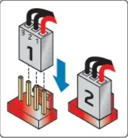
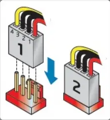
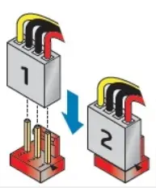

Acceuil
B4
B5
B6
Sommaire
B5- Connecteur FAN
Il faut distinguer les connecteurs à 3 pins de ceux à 4 pins
 
Pin 1 = Terre
Pin 2 = 12V
Pin 3 = Tachymètre
En savoir plus
Pin 4 = Contrôleur

Il est possible de connecter un 4 pins sur un 3 pins
En savoir plus